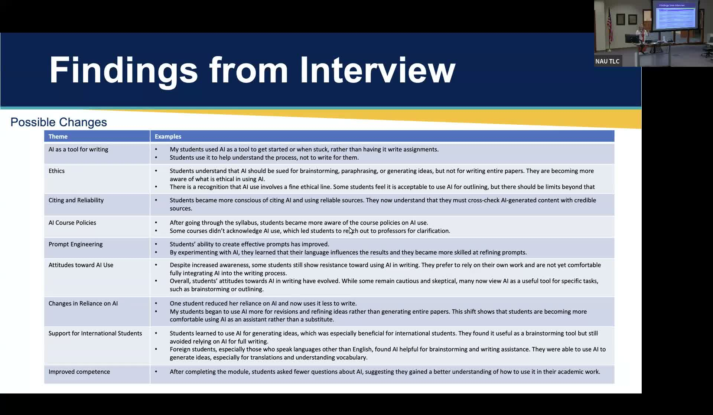

An AI Literacy Module for Students Across the Disciplines
A five-lesson Canvas module helping NAU students understand, evaluate, and ethically use generative AI.
Presented by Alana Kuhlman, PhD, Associate Director, University Writing Program and Lumberjack Writing Center, NAU
About This Project
Students at NAU often arrive at writing center appointments uncertain about which generative AI tools are permitted in their courses and how to use them responsibly. Some freely use AI without awareness of its limitations or biases; others avoid it entirely out of concern about academic integrity. Alana Kuhlman developed a self-paced AI literacy module embedded in Canvas to bridge that gap, giving students across all disciplines a shared foundation before they engage with AI in their coursework or careers.
The module consists of five lessons covering what generative AI is, its affordances and limitations, relevant course policies, ethical implications, and hands-on prompt engineering practice. Each lesson takes roughly 15 to 20 minutes and includes a short activity. The module was piloted in ENG 100 and ENG 405 writing support courses, reaching approximately 100 students per semester. Survey and interview data collected from students and Writing Assistants showed meaningful gains in understanding of course policies, AI limitations, and prompt crafting, with many Writing Assistants reporting that supporting students through the module deepened their own AI fluency as well.
Project Highlights

